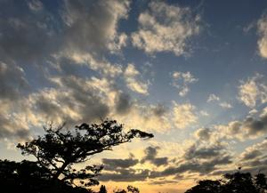
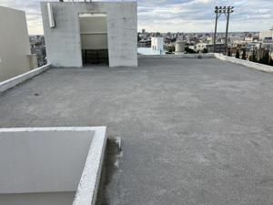

うるがいの話 ある日
最新: ホームで面談【うるがいの話 ある日】とは 一日だけのプログです
『うるがいの話』の最新一日だけのプログで、通信料が少なく経済的だ。カニの画像をクリックすると全ての日付が載る『うるがいの話』サイトを表示します
|
|
【うるがいの話】 うるがい(ｳﾙｶﾞｲ urugai)とは、『もずくがに』の名前でとても大きくなります。 |
|---|---|
|
|
【カミマヤーの話】 猫のことを方言でマヤーといいます。カミマヤー（kamimayaa）とは、神の猫のことです。 |
|
【たながぁの音楽】 たながぁ（ﾀﾅｶﾞｰ tanagaa）とは手長えびのことで、何種類かあり大きいのは車 エビぐらいになります。 |

|
【ぶながぁの話】 ぶながぁ(ﾌﾞﾅｶﾞｰ bunagaa)とは、赤い髪の毛、赤い身体、そして身長は１ｍ２０ｃｍ ぐらい、川の蟹を食べているの目撃された。場所は沖縄県国頭郡大宜味村のと ある村僕の隣近所に住んでいる爺さんから、聞いた話です。 |
|
|
【ギーマの話】 ギーマ(giima)とは、山原の里山に咲くスズランに似た、 花を付けます。実は食べられます、 気が付くと口の周りが紫になっています。 |
2023年11月16日 (木）ホームで面談
15:10

お義母さんが誕生日を迎えたので、ヨメは覚悟を決めてホームで面談した。前
回までは、罵詈雑言で周りにいる人も驚くほどだった。ところが、精神科の薬
の効果もあるのか、かなりトーンが下がりマンショに帰せ！と言わなくなった
と言っていた。ホームの入居者達は楽しく過ごしているようで、ただ一人お義
母さんは周りと協調性できないとホームの職員が言われたと。どうなることか
心配していたが、ヨメはホットしていた。数か月も音信がなかったヨメの妹か
ら、体調が良くなったので週３回はマンションへ行ける筈と連絡があった。ホ
ームに入居したよとヨメは答えた。

工事の責任者から、確認してもらいたいと言われ屋上へ行く。タンクの下に水
漏れがしていることが分かる。数年は持つと思うが、いずれダメになるでしょ
う。修理はできず、タンクの交換か直結かになると言われた。最近は、断水が
ないので同じような水漏れがしている所では、直結で対応してるとのこと。ホ
ー、今回の工事で、直結の対応をお願いすることにした。タンクの撤去には費
用がかかるので、そのままにすることにする。イヤイヤ、いろいろと出てくる
もんだ、でも今やらないと５年後なると業者の人達もどうなるか分からないし
。もう一軒のお隣さんも、業者の人と家の修理の話をしているようだ。
１５時０５分 ビットコインの総資産 ￥１６、４０８（↑８５５）